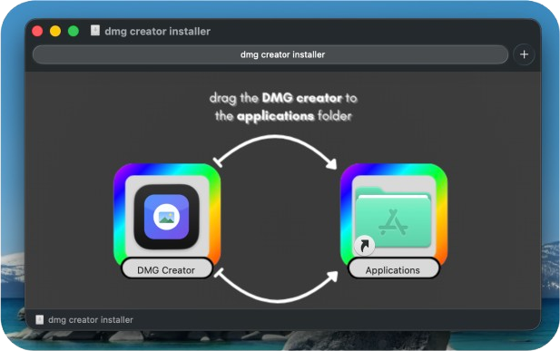
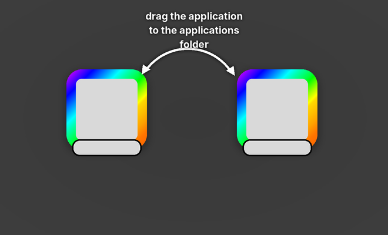
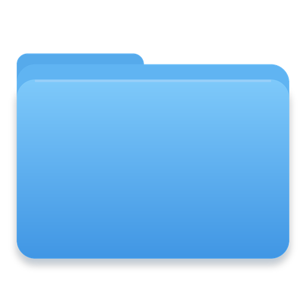

Custom background
Any PNG, at the exact window size. Add a @2x copy and both are packed into one multi-resolution TIFF, so Retina stays sharp.
Free download · macOS 13+
Drop in your app. Drop in a background. Drag the icons where you want them. Press build — and the window that mounts is the one you just drew.



Background pictures, window geometry and icon positions all live in a file the Finder writes and never shows you. This app writes it for you.
Any PNG, at the exact window size. Add a @2x copy and both are packed into one multi-resolution TIFF, so Retina stays sharp.
Icons move where you drag them, snapped to a grid. What the canvas shows is what the mounted window shows.
One toggle adds the symlink everyone expects, already sitting in its slot in the bundled background.
zlib, lzfse, bzip2, lzma or uncompressed — and an optional Developer ID signature on the finished image.
Every image you make is remembered. Mount it, show it in the Finder, or load its settings back in and build it again.
The app is a front end for one dependency-free bash script. Copy the exact command it ran and drop it in your release script.
The parts you would have written yourself, in the order you would have written them.
Your app, a hidden .background folder and the Applications symlink are copied into a staging folder with ditto, resource forks intact.
hdiutil turns that folder into a writable HFS+ image, sized for the contents, and mounts it.
An AppleScript hands the Finder your window bounds, icon size, background picture and every icon position. The Finder writes it into .DS_Store.
The volume is unmounted and converted into the finished read-only image — then signed, if you asked for that.
The engine the app runs is a single script that travels inside the app bundle, with no dependencies beyond macOS itself. The app's terminal button copies the exact command for whatever project you have open.
Free, and about the size of a photo.
Download for macOSThe app is signed locally rather than notarised, so the first launch needs right-click ▸ Open. The first build asks permission to control the Finder — that is how the background and icon positions get set.